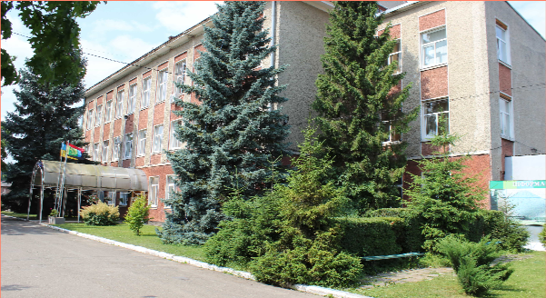

ПРО КОЛЕДЖ
Коломийський політехнічний фаховий коледж Національного університету «Львівська політехніка» - сучасний вищий навчальний заклад, один з найстаріших закладів освіти на Прикарпатті.
Історія коледжу
Коломийський політехнічний фаховий коледж Національного університету «Львівська політехніка» - сучасний вищий навчальний заклад, один з найстаріших закладів освіти на Прикарпатті.
Коломийський політехнічний фаховий коледж бере свій початок від дев’яностих років позаминулого століття, від часу, коли в Коломиї були закладені основи школи деревного промислу. Австрійський уряд своєю постановою від 15 листопада 1894 року дав їй офіційну назву “Цісарсько-королівська фахова школа деревного промислу”. Навчальний заклад, що взяв в основу своєї програми багаті традиції гуцульського деревного мистецтва, мав чотири фахові відділи: різьба фігурна і орнаментальна, столярство будівельне і меблеве, токарство по дереву, а також теслярство.
Починаючи з 1939 року школа була переведена в розряд фабрично-фахових і готувала в основному робітників з механічної обробки деревини, столярів і опоряджувальників. В 1941 році школі повернуто її попередній статус, а в 1942 році відкрито ще 7 нових відділів: будівельний, стельмаський, безкоштовні автомати шевський, слюсарний, бляхарський, електромонтажний і годинникарський. В цей час реміснича школа отримала назву «Державна реміснича школа з українською мовою навчання в Коломиї». В ній було відкрито філію Львівської технічно-фахової школи – будівельний ліцей, який готував спеціалістів з архітектури та внутрішнього оформлення будівель.
26 січня 1945 року наказом Міністерства освіти УРСР № 89 від на базі ремісничої школи був створений Коломийський технікум механічної обробки деревини. Наказом Міністерства деревообробної промисловості УРСР від 16.05.1991 року №32/120 Коломийський технікум механічної обробки деревини реорганізовано в Коломийський механіко-технологічний коледж.
Згідно наказу Міністерства освіти і науки України від 17.05.2000 року №139 Коломийський механіко-технологічний коледж перейменовано в Коломийський політехнічний коледж, враховуючи те, що здійснюючи підготовку фахівців з різних напрямків і спеціальностей, назва механіко-технологічний коледж вже не відображала реальних напрямків підготовки фахівців.
Відповідно до наказу Міністерства освіти і науки України від 22.01.2010 року № 33 створено відокремлений структурний підрозділ Коломийський політехнічний коледж Національного університету «Львівська політехніка».
СПЕЦІАЛЬНОСТІ

ГАЛУЗЕВЕ МАШИНОБУДУВАННЯ
Галузь знань – 13 Механічна інженерія
Освітня кваліфікація – фаховий молодший бакалавр з галузевого машинобудування
Більше інформації

ІНЖЕНЕРІЯ ПРОГРАМНОГО ЗАБЕЗПЕЧЕННЯ
Галузь знань – 12 Інформаційні технології.
Освітня кваліфікація – фаховий молодший бакалавр з інженерії програмного забезпечення.
Більше інформації

ОБЛІК І ОПОДАТКУВАННЯ
Галузь знань – 07 Управління та адміністрування
Освітня кваліфікація – фаховий молодший бакалавр з обліку і оподаткування
Більше інформації

АВТОМАТИЗАЦІЯ ТА КОМП'ЮТЕРНО-ІНТЕГРАВАНІ ТЕХНОЛОГІЇ
Галузь знань – 15 Автоматизація та приладобудування
Освітня кваліфікація – фаховий молодший бакалавр з автоматизації та комп’ютерно-інтегрованих технологій
Більше інформації

ФІНАНСИ, БАНКІВСЬКА СПРАВА ТА СТРАХУВАННЯ
Галузь знань – 12 Інформаційні технології.
Освітня кваліфікація – фаховий молодший бакалавр з інженерії програмного забезпечення.
Більше інформації

МАРКЕТИНГ
Галузь знань – 07 Управління та адміністрування
Освітня кваліфікація – Фаховий молодший бакалавр з маркетингу
Більше інформації

МЕНЕДЖМЕНТ
Галузь знань – 07 Управління та адміністрування
Освітня кваліфікація – Фаховий молодший бакалавр з менеджменту
Більше інформації

ТЕХНОЛОГІЇ ЛЕГКОЇ ПРОМИСЛОВОСТІ
Галузь знань – 12 Інформаційні технології.
Освітня кваліфікація – фаховий молодший бакалавр з інженерії програмного забезпечення.
Більше інформації

ЛІСОВЕ ГОСПОДАРСТВО
Галузь знань – 12 Інформаційні технології.
Освітня кваліфікація – фаховий молодший бакалавр з інженерії програмного забезпечення.
Більше інформації


НАШІ КОНТАКТИ
-
Написати нам на електронну адресу
-
Зателефонувати: +380 ()